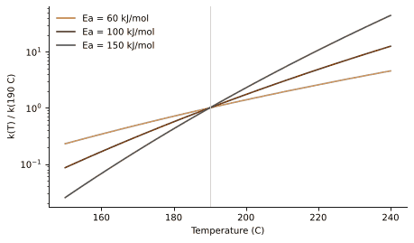

Which rate laws and transport equations does the book use, and where do they come from?
After this chapter you can
Three ideas carry most of the physical reasoning in this book: how fast reactions go and how that depends on temperature; how molecules and heat spread through a material; and how gases behave. This appendix develops each from first-year calculus and chemistry. Chapters 2A, 2B, 5, 7 and 8 refer to its sections.
The reaction rate of a reaction A → products is how fast the concentration of A falls: r = −d[A]/dt. Experiments often find that the rate is proportional to a power of the concentration, r = k[A]n. The constant k is the rate constant, and n is the reaction order. The order is found by experiment; it cannot in general be read from the balanced equation.
The most important case is n = 1, a first-order reaction. Its rate law is a differential equation:
| d[A]/dt = −k[A] | (C.1) |
| where | [A] | concentration of A (mol/L) |
| k | first-order rate constant (1/s or 1/min) |
To solve it, separate the variables: d[A]/[A] = −k dt. Integrate from time 0, when the concentration is [A]0, to time t: ln[A] − ln[A]0 = −kt. Taking exponentials,
| [A] = [A]0 e−kt | (C.2) |
| where | [A]0 | concentration at t = 0 (mol/L) |
The half-life, the time for the concentration to halve, follows by setting [A] = [A]0/2: t1/2 = ln 2/k. For a first-order reaction it does not depend on the starting amount. After three half-lives one eighth remains.
Plotting ln[A] against t gives a straight line of slope −k for a first-order process. Curvature in that plot is the first sign that one exponential is not enough, as with the two particle populations of Chapter 2A and the Weibull degassing of Chapter 5.
Other orders integrate in the same way:
| Order | Rate law | Integrated form | Half-life |
|---|---|---|---|
| 0 | r = k | [A] = [A]0 − kt | [A]0/2k |
| 1 | r = k[A] | [A] = [A]0e−kt | ln 2/k |
| 2 | r = k[A]2 | 1/[A] − 1/[A]0 = kt | 1/(k[A]0) |
Many processes in coffee are pseudo-first-order: a second reactant, such as water or oxygen in the headspace, is present in such excess that its concentration barely changes, so it can be absorbed into k.
Roasting forms some compounds and then destroys them. The simplest model is a pair of first-order steps, A → B → C, with rate constants k1 and k2, starting from pure A. A falls exponentially, as in Equation C.2. Species B is formed from A and lost to C, so d[B]/dt = k1[A] − k2[B]. Solving this equation gives
| [B] = [A]0 k1/(k2 − k1) (e−k1t − e−k2t) | (C.3) |
| where | k1, k2 | rate constants of the first and second steps (1/min) |
Going further: Solving for B
Substitute [A] = [A]0e−k1t into d[B]/dt + k2[B] = k1[A]. Multiply both sides by the integrating factor ek2t, which turns the left side into d([B]ek2t)/dt. Integrate from 0, where [B] = 0, to t: [B]ek2t = [A]0k1(e(k2 − k1)t − 1)/(k2 − k1). Multiplying by e−k2t gives Equation C.3.
Setting d[B]/dt = 0 gives the time at which B peaks:
| tmax = ln(k1/k2) / (k1 − k2) | (C.4) |
| where | tmax | time at which the intermediate B is greatest (min) |
and the peak amount [B]max/[A]0 = (k2/k1)k2/(k1 − k2).
Worked example: An intermediate that peaks
Problem. With k1 = 0.3 and k2 = 0.1 per minute at constant temperature, when does B peak and how much is there?
Plan. Apply Equation C.4 and the peak formula.
Solution. tmax = ln 3/0.2 = 5.49 min. [B]max/[A]0 = (1/3)0.1/0.2 = 3−0.5 = 0.577.
Check. Stopping before 5.5 min leaves A unconverted; stopping after it loses B to C. Chapter 8 treats acids formed and destroyed during roasting this way, with temperature rising so that both rate constants change with time.
Rate constants rise steeply with temperature. The Arrhenius equation describes the rise:
| k = A exp(−Ea / RT) | (C.5) |
| where | A | pre-exponential factor (same unit as k) |
| Ea | activation energy (J/mol) | |
| R | gas constant, 8.314 (J/(mol K)) | |
| T | absolute temperature (K) |
The activation energy is the energy barrier that colliding molecules must overcome to react. The exponential factor is the fraction of molecules with enough energy, and it grows rapidly with temperature. Taking logarithms gives ln k = ln A − (Ea/R)(1/T), so a plot of ln k against 1/T is a straight line of slope −Ea/R.
Writing the logarithmic form at two temperatures and subtracting removes A:
| Ea = R ln(k2/k1) / (1/T1 − 1/T2) | (C.6) |
| where | k1, k2 | rate constants at temperatures T1 and T2 |
The Q10 factor, the ratio of rates 10 K apart, expresses the same information over a narrow range: Q10 = exp[(Ea/R)(1/T − 1/(T + 10))]. The rule of thumb that rates double every 10 °C near room temperature corresponds to Ea ≈ 53 kJ/mol.

Figure C.1. Arrhenius sensitivity across the roasting range. Compare the slopes: a higher activation energy makes a reaction more sensitive to temperature, so changing the heating path changes the balance between reactions.
Worked example: Accelerated storage
Problem. A staling marker forms with first-order rate constants of 0.437 per day at 40 °C and 2.10 per day at 60 °C. Find the activation energy, the rate constant and half-life at 25 °C, and Q10 between 25 and 35 °C.
Plan. Apply Equation C.6, then Equation C.5 in ratio form to extrapolate.
Solution. Ea = 8.314 × ln(4.805)/(1/313.15 − 1/333.15) = 68.1 kJ/mol. At 25 °C: k = 0.437 exp[−(68,080/8.314)(1/298.15 − 1/313.15)] = 0.117 per day, a half-life of ln 2/0.117 = 5.9 days. Q10 between 25 and 35 °C is 2.44.
Check. The extrapolation assumes the same mechanism at all three temperatures, which accelerated tests cannot verify on their own (Chapter 5, Section 8).
At roasting temperatures the spread between reactions matters more than any single activation energy. From 190 to 200 °C, a reaction with Ea = 60 kJ/mol speeds up by a factor of 1.39, one with 100 kJ/mol by 1.73, and one with 150 kJ/mol by 2.28. Reactions with higher activation energies gain more from heat, so the temperature path decides which products dominate.
Diffusion is the net movement of molecules from high to low concentration caused by their random thermal motion. Fick's first law states that the flux of molecules is proportional to the concentration gradient:
| J = −D dc/dx | (C.7) |
| where | J | diffusive flux: amount crossing unit area per unit time (mol/(m2 s)) |
| D | diffusivity (m2/s) | |
| dc/dx | concentration gradient (mol/m4) |
The minus sign says that molecules move down the gradient. Combining Fick's first law with conservation of mass gives Fick's second law, ∂c/∂t = D ∂2c/∂x2, which describes how a concentration profile changes over time.
A useful result needs no solution at all. A molecule moving randomly travels a net distance that grows with the square root of time, not in proportion to it. The diffusion length in time t is of order
| L ≈ √(D t) | (C.8) |
| where | L | typical distance diffused (m) |
| t | time (s) |
With D = 2 × 10−10 m2/s, typical for small molecules in a wet plant tissue, three minutes gives √(2 × 10−10 × 180) = 1.9 × 10−4 m, about 190 µm. Particles much larger than this cannot be emptied in a three-minute brew. Turning Equation C.8 around, the time to diffuse a distance a is of order a2/D: doubling the distance quadruples the time.
Going further: The solution for a sphere
In a sphere of radius a with uniform initial concentration and its surface held at zero, Fick's second law in spherical coordinates is ∂c/∂t = D (1/r2) ∂/∂r(r2 ∂c/∂r). Substituting u = rc turns it into the one-dimensional equation ∂u/∂t = D ∂2u/∂r2, with u = 0 at r = 0 and r = a. Separating variables gives modes sin(nπr/a) that decay as exp(−n2π2Dt/a2). Matching the initial condition and integrating over the volume gives the fraction still inside:
M(t)/M0 = (6/π2) Σn=1∞ (1/n2) exp(−n2π2Dt/a2).
At t = 0 the sum equals π2/6, so the fraction is 1. The n = 1 term has time constant a2/(π2D), Equation 2A.7; the higher terms vanish quickly.
Viscosity is a fluid's resistance to flowing. Water's viscosity falls steeply with temperature: about 1.00 mPa s at 20 °C, 0.89 at 25 °C, 0.47 at 60 °C and 0.30 near 93 °C. Darcy's law (Chapter 2B) makes flow through a coffee bed inversely proportional to viscosity, so at fixed permeability water near 93 °C flows about three times faster than at room temperature.
Heat moves by three routes, each with its own law.
Conduction carries heat through a material: q = −λ dT/dx, where λ is the thermal conductivity in W/(m K). It has the same form as Fick's first law.
Convection carries heat between a surface and a moving fluid: q = h(T∞ − Ts), where h is the heat-transfer coefficient, T∞ the fluid temperature and Ts the surface temperature. Forced flow of hot air gives h from tens to a few hundred W/(m2 K).
Radiation carries heat as infrared light: q = εσ(Tsurr4 − Ts4), with σ = 5.67 × 10−8 W/(m2 K4), temperatures in kelvin and ε the emissivity (Chapter 7).
If heat spreads through the inside of a body much faster than it arrives at the surface, the body's temperature stays nearly uniform. An energy balance on the whole body is then enough: m cp dT/dt = hA(T∞ − T). This is a first-order equation like Equation C.1, with solution
| T∞ − T = (T∞ − T0) e−t/τh, with τh = m cp / (hA) | (C.9) |
| where | τh | thermal time constant (s) |
| m | mass of the body (kg) | |
| cp | specific heat capacity (J/(kg K)) | |
| A | surface area (m2) |
The Biot number, Bi = hLc/λ with Lc = volume/area (a third of the radius for a sphere), decides whether this lumped model is valid (Equation 7.3). For Bi below about 0.1 it is accurate; larger values mean the surface runs ahead of the centre. The time for heat to reach the centre is of order r2/α, where α = λ/(ρcp) is the thermal diffusivity, the heat-flow counterpart of D in Equation C.8.
Worked example: Is a coffee bean lumped?
Problem. Model a green bean as a sphere of volume 0.125 cm3 with λ = 0.15 W/(m K), density 1,200 kg/m3 and cp = 1.7 kJ/(kg K), heated by air with h = 50 W/(m2 K). Find the Biot number and the internal heating time.
Plan. Find the radius from the volume, then Lc = r/3, Bi and r2/α.
Solution. r = (3V/4π)1/3 = 3.1 mm, so Lc = 1.03 mm and Bi = 50 × 0.00103/0.15 = 0.34. The thermal diffusivity is α = 0.15/(1,200 × 1,700) = 7.4 × 10−8 m2/s, so r2/α ≈ 130 s.
Check. Bi exceeds 0.1, so the bean is not lumped: during a fast roast the centre can lag the surface by tens of degrees for a minute or more. Every input is uncertain by up to a factor of two and the bean is not a sphere, so the existence of the lag is reliable while its size is not. Chapter 7 compares this estimate with measurements.
A batch of beans in a drum is a different system. Heat reaches the pile through the drum wall and the air, the beans mix, and a lumped balance for the whole batch (Chapter 7) describes the average bean temperature with an effective hA per kilogram that bundles all three routes.
The ideal gas law gives the volume of a known amount of gas:
| pV = nRT | (C.10) |
| where | p | pressure (Pa) |
| V | volume (m3) | |
| n | amount of gas (mol) |
Henry's law gives how much gas dissolves in a liquid:
| c = kH p | (C.11) |
| where | c | dissolved concentration (mol/L) |
| kH | Henry's law constant (mol/(L atm)) | |
| p | partial pressure of the gas above the liquid (atm) |
For CO2 in water, kH is about 0.034 mol/(L atm) at 25 °C and several times smaller near 90 °C. Hot brewing water therefore holds little CO2, and gas released from fresh grounds forms bubbles: the bloom (Chapter 5).
Worked example: Gas from an espresso dose
Problem. How much CO2, as a volume at 20 °C and 1 atm, is released by 18 g of coffee containing 4 mg/g?
Plan. Convert mass to moles, then apply Equation C.10.
Solution. The amount is 72 mg/44.01 g/mol = 1.64 × 10−3 mol, so the volume is V = nRT/p = 1.64 × 10−3 × 8.314 × 293.15/101,325 = 3.9 × 10−5 m3, or 39 mL.
Check. That is roughly the volume of the shot itself, which is why fresh espresso foams so heavily.
activation energy; Arrhenius equation; Conduction; Convection; Diffusion; diffusion length; Fick's first law; half-life; heat-transfer coefficient; Henry's law; ideal gas law; lumped model; pseudo-first-order; Q10; Radiation; rate constant; reaction order; reaction rate; Viscosity.
Tiers: A recall, B calculation, C analysis or design.
Atkins P., de Paula J., Physical Chemistry, chapters on kinetics and transport; Crank J., The Mathematics of Diffusion, for the sphere solution; Incropera F.P., DeWitt D.P., Fundamentals of Heat and Mass Transfer, for the Biot number and lumped analysis.
Worked solutions to all problems: Appendix C. Physical chemistry and transport solutions.
Upstream, Second edition, version 2.2 (changes and errata). © 2026 [Author name]. Licensed for personal use; see licence.